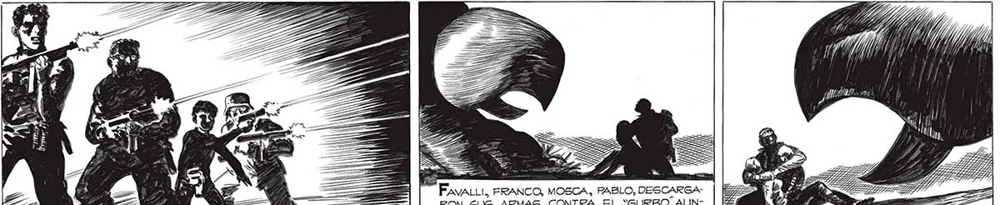
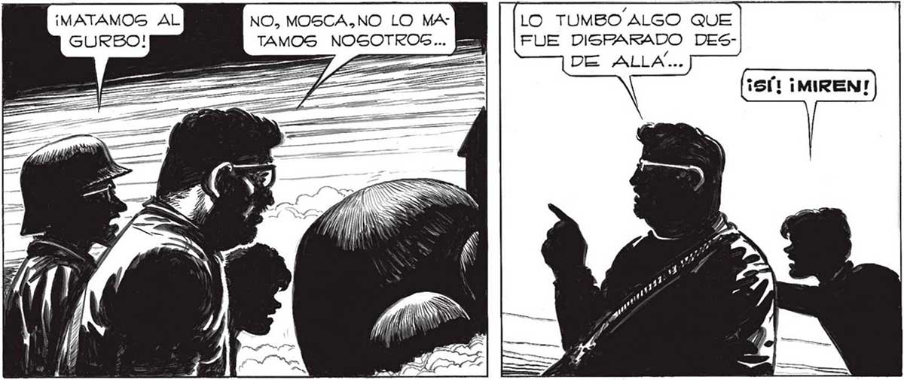

304 4 p -S a e y pm 2 Mr — ¡ a ZZ ALLAN FavaLLi, FRANCO, MOSCA, PABLO, DESCARGARON 5U5 ARMAS CONTRA EL “GURBO.AUNQUE SABIAN QUE ERA INVULNERABLE ... AN É. «curBo” APARTO. DE PRONTO LA CABEZOTA. COMO Sl ACABARA DE RECIBIR UN IMPACTO. A PESAR DE QUE, POR NO HERIRME, NI LOS OTROS NI FAVALLI, DISPARABAN YA... AE NTREVIERON UNA === SOMBRA FURTIVA QUE LO TUMBO ALGO QUE FUE DISPARADO DES50 MULA ¡MATAMOS AL NO, MOSCA.NO LO MA TAMOS NOSOTROS... <P, > <P E ST" oa > pz EZ l ' 5 Mo A a

